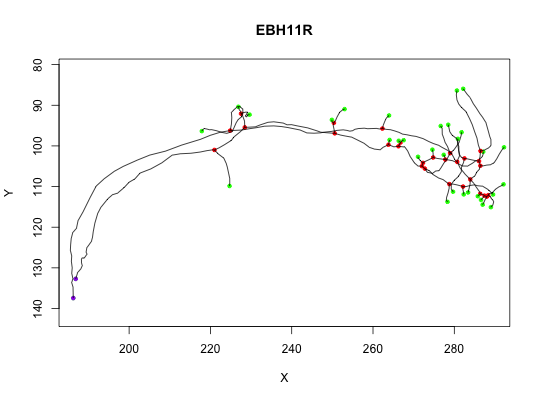
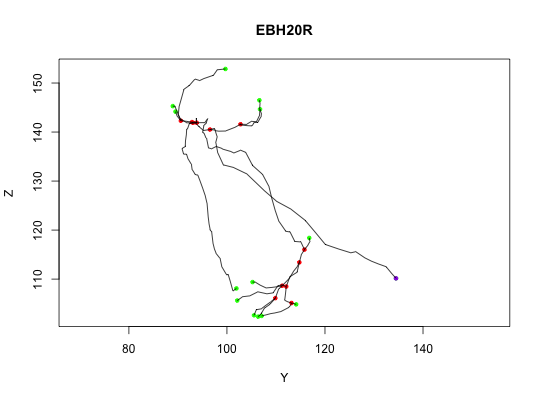
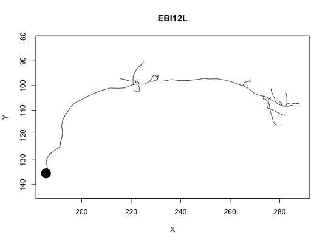

Plot a 2D projection of a neuron
Usage
# S3 method for neuron plot(x, WithLine = TRUE, WithNodes = TRUE, WithAllPoints = FALSE, WithText = FALSE, soma = FALSE, PlotAxes = c("XY", "YZ", "XZ", "ZY"), axes = TRUE, asp = 1, main = x$NeuronName, sub = NULL, xlim = NULL, ylim = NULL, AxisDirections = c(1, -1, 1), add = FALSE, col = NULL, PointAlpha = 1, tck = NA, lwd = par("lwd"), boundingbox = NULL, ...)
Arguments
- x
- a neuron to plot.
- WithLine
- whether to plot lines for all segments in neuron.
- WithNodes
- whether points should only be drawn for nodes (branch/end points)
- WithAllPoints
- whether points should be drawn for all points in neuron.
- WithText
- whether to label plotted points with their id.
- soma
- Whether to plot a circle at neuron's origin representing the
soma. Either a logical value or a numeric indicating the radius (default
FALSE). Whensoma=TRUEthe radius is hard coded to 2. - PlotAxes
- the axes for the plot.
- axes
- whether axes should be drawn.
- asp
- the
y/xaspect ratio, seeplot.window. - main
- the title for the plot
- sub
- sub title for the plot
- xlim
- limits for the horizontal axis (see also boundingbox)
- ylim
- limits for the vertical axis (see also boundingbox)
- AxisDirections
- the directions for the axes. By default, R uses the
bottom-left for the origin, whilst most graphics software uses the
top-left. The default value of
c(1, -1, 1)makes the produced plot consistent with the latter. - add
- Whether the plot should be superimposed on one already present
(default:
FALSE). - col
- the color in which to draw the lines between nodes.
- PointAlpha
- the value of alpha to use in plotting the nodes.
- tck
- length of tick mark as fraction of plotting region (negative number is outside graph, positive number is inside, 0 suppresses ticks, 1 creates gridlines).
- lwd
- line width relative to the default (default=1).
- boundingbox
- A 2 x 3 matrix (ideally of class
boundingbox) that enables the plot axis limits to be set without worrying about axis selection or reversal (see details) - ...
- additional arguments passed to plot
Value
-
list of plotted points (invisibly)
Description
Plot a 2D projection of a neuron
Details
This functions sets the axis ranges based on the chosen
PlotAxes and the range of the data in x. It is still possible
to use PlotAxes in combination with a boundingbox, for
example to set the range of a plot of a number of objects.
nat assumes the default axis convention used in biological imaging, where the origin of the y axis is the top rather than the bottom of the plot. This is achieved by reversing the y axis of the 2D plot when the second data axis is the Y axis of the 3D data. Other settings can be achieved by modfiying the AxisDirections argument.
Examples

# Clear the current plot and draw the third neuron from a different view plot(Cell07PNs[[3]], PlotAxes="YZ")
